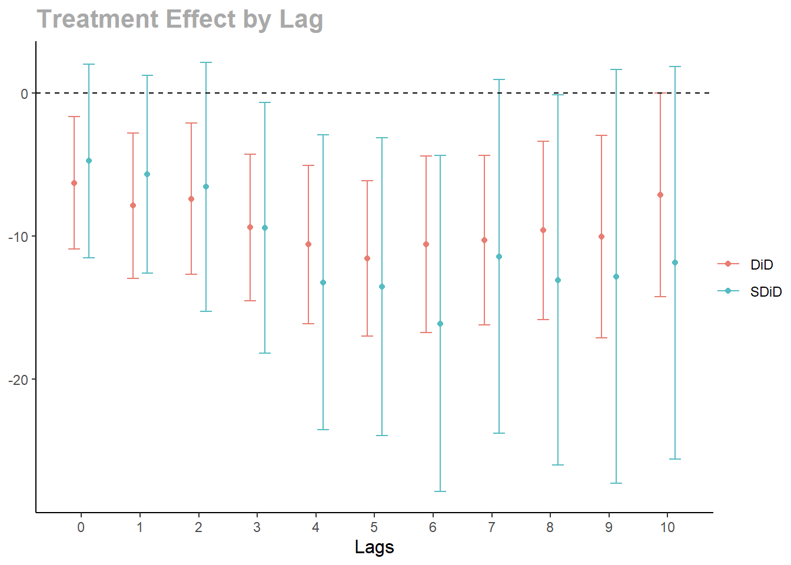

Sequential Synthetic Difference-in-Differences (sequential SDiD) estimator for event studies with staggered treatment adoption.
This package estimates treatment effect, particularly when the parallel trends assumption fails.
Installation
The package can be installed from github using devtools.
install.packages("devtools")
devtools::install_github("AntonZudin/sequential-SDiD")Usage
The package uses 2 functions to prepare the dataset .
1. to_wide
- Converts panel from long to wide format.
- Creates Y, W and X dataframes with adoption date column being the first one.
2. prepare_wide
- If the level is
cohort, aggregates on the data on the cohort level. - If the level is
unit, removes the adoption date column.
panel <- to_wide(CHC,
unit = 1, time = 3, outcome = 2,
treatment = 4, contr_covs = c(5), treat_covs = c(),
weights = 6
)
panel$X$popwt <- panel$X$popwt / 10000
panel_avg <- prepare_wide(panel, level = "cohort")Estimate the noise variance on the untreated part of the panel.
s2 <- estimate_s2(panel$Y[, -1], panel$W[, -1], panel$X$popwt)
est <- sequential_estimator(
panel_avg,
s2 = s2,
type = "both",
aggregate_effect = aggregate_inv_did_var)
print(est, n_lags = 11)## Synthetic DiD:
## -4.76 -5.68 -6.57 -9.45 -13.25 -13.57 -16.13 -11.44 -13.09 -12.84 -11.88
##
## DiD:
## -6.30 -7.88 -7.41 -9.41 -10.61 -11.58 -10.59 -10.30 -9.62 -10.06 -7.15
##
## s2: 2728.60Estimate standard error with Bayesian bootstrap.
cat("St. error of DiD estimator:", "\n")
plot(
est, se, 11,
error_bar_width = 0.4, xlab = "Lags",
legend_position = "right"
)
References
Dmitry Arkhangelsky, Aleksei Samkov. Sequential Synthetic Difference in Differences, 2025. [arxiv]